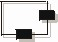
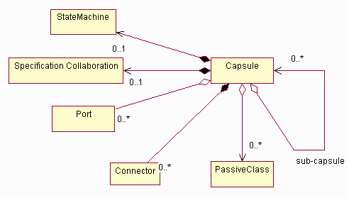
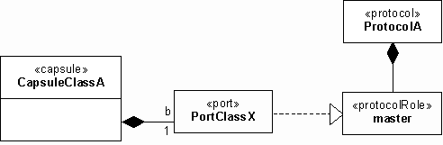
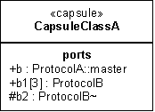
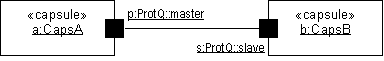
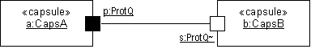
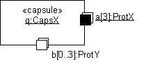

Artifacts >
Artifacts >
 Analysis & Design Artifact Set >
Analysis & Design Artifact Set >
 Design Model... >
Capsule
Design Model... >
Capsule
Artifacts >
Analysis & Design Artifact Set >
Design Model... >
Capsule
Artifact:
| ||||||||||||||||
|
 Capsule |
A capsule is a specific design pattern which represents an encapsulated thread of control in the system. |
|
UML representation: |
Class, stereotyped as «capsule». |
|
Role: |
|
|
Optionality: |
Used only for the design of real-time or reactive systems, usually in conjunction with Rational Rose RealTime. |
|
More information: |
|
| Input to Activities: | Output from Activities: |
Capsules represent a specific pattern of class structure and composition which has proven useful in modeling and designing systems which have a high degree of concurrency. Using a capsule as a short-hand notation for a specific, proven design pattern makes design easier and less error-prone.
A capsule is represented as a Class, stereotyped «capsule». A capsule is a composite element, as depicted in the figure below.

Capsule Composition
As noted above, a capsule may have ports, and may "contain" passive classes and/or sub-capsules. It may also have a state machine which completely describes the behavior of the capsule. A specific taxonomy of capsules and various ways in which they can be used are discussed in Guidelines: Capsule.
A capsule encapsulates a thread of control. A capsule is an abstraction of an independent thread of control in the system; it is the primary unit of concurrency in the system. Additional isolation of threads of control may be done through the use of operating system process and threads, by mapping capsules to specific operating system processes and threads. Messages to the capsule arrive via a port, and are processed sequentially; if the capsule instance is busy, messages are queued. Capsules enforce run-to-completion semantics, so that when an event is received, it is completely processed regardless of the number or priority of other events arriving.
A capsule interacts with its surroundings through ports. A port is a signal-based boundary object; it mediates the interaction of the capsule with the outside world. A port implements a specific interface and may be dependent on a specific interface. A capsule cannot have operations or public parts other than ports, which are its exclusive means of interaction with the external world.
Each port plays a particular role in a collaboration. The collaboration describes how the capsule interacts with other objects. To capture the complex semantics of these interactions, ports are associated with a protocol that defines the valid flow of information (signals) between connected ports of capsules. The protocol captures the contractual obligations that exist between capsules. By forcing capsules to communicate solely through ports, it is possible to fully de-couple the internal implementations of the capsule from the environment surrounding the capsule. This makes capsules highly reusable.
A simple capsule's functionality is realized directly the capsule's state machine. More complex capsules combine the state machine with an internal network of collaborating sub-capsules joined by connectors. These sub-capsules are capsules in their own right, and can themselves be decomposed into sub-capsules. This type of decomposition can be carried to whatever depth is necessary, allowing modeling of arbitrarily complex structures with just this basic set of structural modeling constructs. The state machine (which is optional for composite capsules), the sub-capsules, and their connections network represent parts of the implementation of the capsule and are hidden from external observers.
A capsule may be a composite element. Capsules may be composed of other capsules and passive classes. Capsules and passive classes are joined together by connectors or links in a collaboration; this collaboration defines the 'structure' of the capsule, and so is termed a 'specification collaboration'. A capsule may have a state machine that can send and receive signals via the end ports of the capsule and that has control over certain elements of the internal structure. Hence, this state machine may be regarded as implementing reflective behavior, that is, behavior that controls the operation of the capsule itself.
Ports are objects whose purpose is to act as boundary objects for a capsule instance. They are "owned" by the capsule instance in the sense that they are created along with their capsule and destroyed when the capsule is destroyed. Each port has its identity and state that are distinct from the identity and state of their owning capsule instance (to the same extent that any part is distinct from its container).
Although ports are boundary objects that act as interfaces, they do not map directly to UML interfaces. A UML interface is purely a behavioral thing—it has no implementation structure. A port, on the other hand, includes both structure and behavior. It is a composite part of the structure of the capsule, not simply a constraint on its behavior. It realizes the architectural pattern that we might call "manifest interface".
In UML, we model a port as a class with the «port» stereotype. As noted earlier, the type of a port is defined by the protocol role played by that port. Since protocol roles are abstract classes, the actual class corresponding to this instance is one that implements the protocol role associated with the port. In UML the relationship between the port and the protocol role is referred to as a realizes relationship. The notation for this is a dashed line with a solid triangular arrowhead on the specification end. It is a form of generalization whereby the source element—the port—inherits only the behavior specification of the target—the protocol role—but not its structure.
A capsule is in a composition relationship with its ports. If the multiplicity of the target end of this relationship is greater than one, it means that multiple instances of the port exist at run time, each participating in a separate instance of the protocol. If the multiplicity is a range of values, it means that the number of ports can vary at run time and that ports can be dynamically created and destroyed (possibly subject to constraints).

Ports, protocols, and protocol roles
The above figure shows an example of a single port named b belonging to capsule class CapsuleClassA. This port realizes the master role of the protocol defined by protocol class ProtocolA. Note that the actual port class, PortClassX, being an implementation class that may vary from implementation to implementation, is normally not of interest to the modeler until the implementation stage. Instead, the information that is of interest is the protocol role that this port implements. For this reason and also for reasons of notational convenience, the notation shown in Figure 1 is not normally used and is replaced by the more compact form described in the following section.
In class diagrams, the ports of a capsule are listed in a special labeled list compartment as illustrated. The ports list compartment normally appears after the attribute and operator list compartments. This notation takes advantage of the UML feature that allows the addition of specific named compartments.

Port notation - class diagram representation
All external ports (relay ports and public end ports) have public visibility while internal ports have protected visibility (e.g., port b2). The protocol role (type) of a port is normally identified by a pathname since protocol role names are unique only within the scope of a given protocol. For example, port b plays the master role defined in the protocol class called ProtocolA. For the very frequent case of binary protocols, a simpler notational convention is used: a suffix tilde symbol ("~") is used to identify the conjugated protocol role (e.g., port b2) while the base role name is implicit with no special annotation (e.g., port b1). Ports with a multiplicity other than 1 have the multiplicity factor included between square brackets. For example, port b1[3] has a multiplicity factor of exactly 3 whereas a port designated by b5[0..2] has a variable number of instances not exceeding 2.
A connector represents a communication channel that provides the transmission facilities for supporting a particular signal-based protocol. A key feature of connectors is that they can only interconnect ports that play complementary roles in the protocol associated with the connector. In principle, the protocol roles do not necessarily have to belong to the same protocol, but in that case they have to be compatible with the protocol of the connector.
Connectors are abstract views of signal-based communication channels that interconnect two or more ports. The ports bound by a connection must play mutually complementary but compatible roles in a protocol. In collaboration diagrams, they are represented by association roles that interconnect the appropriate ports. If we abstract away the ports from this picture, connectors really capture the key communication relationships between capsules. These relationships have architectural significance since they identify which capsules can affect each other through direct communication. Ports are included to allow the encapsulation of capsules under the principles of information hiding and separation of concerns.
The similarity between connectors and protocols might suggest that the two concepts are equivalent. However, this is not the case, since protocols are abstract specifications of desired behavior while connectors are physical objects whose function is merely to convey signals from one port to the other. Typically, the connectors themselves are passive conduits. (In practice, physical connectors may sometimes deviate from the specified behavior. For example, as a result of an internal fault, a connector may lose, reorder, or duplicate messages. This type of failure is common in distributed communication channels.)
A connector is modeled by an association that exists between two or more ports of the corresponding capsule classes. (For advanced applications in which the connector has physical properties, an association class may be used since the connector is actually an object with a state and an identity. As with ports, the actual class that is used to realize a connector is an implementation issue.) The relationship to the supported protocol is implicit through the connected ports. Consequently, no UML extensions are required for representing connectors.
A capsule’s complete internal structure is represented by a specification collaboration. This collaboration includes a specification of all of its ports, sub-capsules, and connectors. Like ports, the sub-capsules and connectors are strongly owned by the capsule and cannot exist independently of the capsule. They are created when the capsule is created and destroyed when their capsule is destroyed.
Some sub-capsules in the structure may not be created at the same time as their containing capsule. Instead, they may be created subsequently, when and if necessary, by the state machine of the capsule. The state machine can also destroy such capsules at any time. This follows the UML rules on composition.
The structure of a capsule may contain so-called plug-in roles. These are, in effect, placeholders for sub-capsules that are filled in dynamically. This is necessary because it is not always known in advance which specific objects will play those roles at run time. Once this information is available, the appropriate capsule instance (which is owned by some other composite capsule) can be "plugged" into such a slot and the connectors joining its ports to other sub-capsules in the collaboration are automatically established. When the dynamic relationship is no longer required, the capsule is "removed" from the plug-in slot, and the connectors to it are taken down.
Dynamically created sub-capsules and plug-ins allow the modeling of dynamically changing structures while ensuring that all valid communication and containment relationships between capsules are specified explicitly. This is key in ensuring architectural integrity in a complex real-time system.
Ports may also be depicted in specification collaboration diagrams. In these diagrams, objects are represented by the appropriate classifier roles, that is, sub-capsules by capsule roles and ports by port roles. To reduce visual clutter, port roles are generally shown in iconified form, represented by small black or white squares. Public ports are represented by port role icons that straddle the boundary of the corresponding capsule roles as shown in the previous figure. This shorthand notation allows them to be connected both from inside and outside the capsule without unnecessary crossing of lines and also identifies them clearly as boundary objects.

Port notation - specification collaboration diagram
Note that the labels are adornments to the port roles and should not be confused with association end names of the connector. Also, because ports are uniquely identified by their names, it is possible, as a graphical convenience, to arrange the public port roles around the perimeter of a sub-capsule box in any order. This can be used to minimize crossovers between connector lines.
For the case of binary protocols, an additional stereotype icon can be used: the port playing the conjugate role is indicated by a white-filled (versus black-filled) square. In that case, the protocol name and the tilde suffix are sufficient to identify the protocol role as the conjugate role; the protocol role name is redundant and should be omitted. Similarly, the use of the protocol name alone on a black square indicates the base role of the protocol. For example, if the "master" role in protocol ProtQ is declared as the base, then the diagrams in the figure below and the figure above are equivalent. This convention makes it easy to see when complementary protocol roles are connected.

Notational conventions for binary protocols
Ports with a multiplicity factor that is greater than one can also be indicated graphically using the standard UML multiobject notation as shown in the next figure. This is not mandatory (the multiplicity string is sufficient) but it emphasizes the possibility of multiple instances of the port.

Ports with multiplicity factor greater than 1
The optional state machine associated with a capsule is just another part of a capsule’s implementation. However, it has certain special properties that distinguish it from the other constituents of a capsule:
Dynamically created sub-capsules are indicated simply by a variable multiplicity factor. Like plug-in slots, these may also be specified by a pure interface type. This means that, at instantiation time, any implementation class that supports that interface can be instantiated. This provides for genericity in structural specifications.
Despite its additional restrictions, the state machine associated with a capsule is modeled by the standard link between a UML Classifier and a State Machine. The implementation/decomposition of a capsule is modeled by a standard UML collaboration element that can be associated with a classifier.
Architecturally significant capsules are identified and described during the Elaboration Phase; remaining Capsules (usually decompositions of top-level capsules) are identified and refined in the Construction Phase.
The software architect is responsible for the integrity of the capsule, ensuring that:
Capsules are a specific pattern for representing and resolving thread of
control issues. They are the recommended way to handle concurrency in a
real-time or reactive system.
|
Rational Unified
Process
|